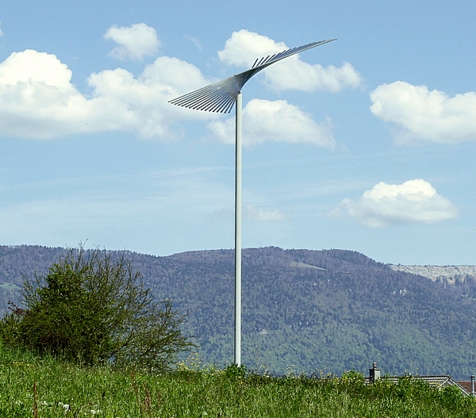

Auf der Strecke von Schnottwil nach Büren a.A. blitzt einen bei Sonnenschein von einer Anhöhe etwas abseits der Strasse ein Chromstahlgebilde an. Von nahem betrachtet, entpuppt es sich als Skulptur – aber weshalb steht sie hier? Nur eine kleinere Infotafel beschreibt die Zeit, die der Anhöhe wohl den Namen verlieh, den sie bis heute trägt: Chilchmatt.
Die einzige sichtbare Spur der Wallfahrtsstätte auf der Chilchmatt in Oberbüren: «Die Feder» – ein Denkmal, gestaltet von Toni Weber und Gunter Frentzel (2003). (Bild: Christina Mäder-von Allmen)
Vom Tod ins Leben gerufen
Bischof Otto von Sonnenberg, dessen Konstanzer Bistum sich von Ulm bis Büren erstreckte, berichtete 1486 in einem Brief an den damaligen Papst: «[...] dass sich in der Pfarrkirche in der Stadt Büren [...] ein Bild der heiligen Jungfrau befindet, zu welchem die Christgläubigen beiderlei Geschlechts und besonders die Ungebildeten unter dem Scheine der Frömmigkeit die Frühgeburten und die verstorbenen Kinder [...] sowohl aus der Konstanzer Diözese als auch aus den umliegenden Bistümern, in grosser Zahl bringen. Sie glauben, diese Kinder und Frühgeburten [...] würden dort auf wunderbare Weise vom Tode zum Leben erweckt [...].» In den 1990er Jahren stellte der Archäologische Dienst des Kantons Bern auf der Chilchmatt Grabungen an. In der Schicht der Zeit, in der Bischof Otto von Sonnenberg schrieb, fanden sich Reste einer grossen Kirche auf einem aufgeschütteten Plateau. Sie war das Ziel der Wallfahrt; hier ereigneten sich die wundersamen Wiederbelebungen. Im Umfeld verteilt fand man die Skelettreste von etwa 250 Totgeburten. Bischof Otto spricht sogar von 2000 toten Säuglingen, die zur Zeit der Abfassung seines Briefes nach Büren gebracht worden seien. Auch die Archäologen vermuten, dass ursprünglich mehr Gräber bestanden, als heute nachweisbar sind. War es mit dem Wunder also nicht weit her? Die Gräber wollen das Gegenteil sagen. Die Ausrichtung und auch die Körperhaltung der Kinder weisen deutlich darauf hin, dass sie als Getaufte begraben wurden. Für die Taufe müssen sie aber lebendig gewesen sein – wie ging das? Und in welchem Verhältnis stünde eine solche «wunderbare» Wiedererweckung zur Tatsache, dass die Kinder nach der Taufe vor Ort begraben wurden, ihr Leben als Auferweckte also von kurzer Dauer war? Die einzige einleuchtende Antwort: Das «irdische» Weiterleben der Kinder war gar nicht das Ziel. Vielmehr sollte die Seele des Kindes davor bewahrt werden, ewig im Nicht-Ort zwischen Himmel und Hölle gefangen zu bleiben. Denn das wäre auch für die Lebenden gefährlich gewesen: Das Kind, unfähig, zur Ruhe zu kommen, hätte sie heimsuchen können. So war die Taufe des Kindes für seine Eltern sowohl ein Dienst am Wohlergehen des Kindes als auch ein Ritual, das sie selbst vor Schuldzuweisungen durch ihr soziales Umfeld schützte. Büren war bei weitem nicht die einzige Stätte, die Massnahmen zur Rettung der Seele von ungetauft verstorbenen Säuglingen anbot. In ganz Europa gab es damals solche Orte; Saint-Maurice de Laques, Notre-Dame de Bonsecours-les-Nancy, Ursberg – die Liste liesse sich fast beliebig verlängern.
Aberglaube?
Bischof Otto hielt diese Vorgänge für «Aberglauben». Er kannte das Geheimnis der erstaunlichen Erfolgsquote bei den Wiederbelebungen: «[...] Frauen erwärmen die todten Kinder zwischen glühenden Kohlen [...]. Dem warm gewordenen todten Kinde oder der Frühgeburt wird eine ganz leichte Feder über die Lippen gelegt und wenn die Feder zufällig durch die Luft oder die Wärme der Kohlen von den Lippen weg bewegt wird, so erklären die Weiber, die Kinder und Frühgeburten atmeten und lebten und sofort lassen sie dieselben taufen unter Glockengeläute und Lobgesängen.» Die «kirchlichen Strafen», die er gegen die Frauen (!) verhängte, die Kinder in die Kapelle gebracht hatten, fruchteten aber nicht. Das lag mitunter daran, dass auch Dritte am Wallfahrtsort interessiert waren. Als Bern um 1495 die Herrschaft über Büren übernahm, förderte es die Wallfahrt weiter. Das zahlte sich aus: 1504 erwirtschaftete der Wallfahrts- und Wiederbelebungsbetrieb 2344 Pfund. Auch der Ort Büren selbst profitierte vom Strom der Pilger. Eine Gnade im Sinne von «gratis» waren Wiederbelebung, Taufe und Bestattung nicht. Insofern war es nur konsequent, dass Bern mit der Einführung der Reformation 1528 der Wundertätigkeit in Oberbüren ein Ende setzen wollte. Zumal der reformatorische Glaube die Taufe nicht mehr als notwendig für die Rettung der Seele des Kindes ansah. Das Bedürfnis, auch die toten Kinder zu taufen, war damit nicht aus der Welt geschafft: Es kamen weiterhin Pilgerinnen mit totgeborenen Kindern nach Oberbüren. Die Berner Obrigkeit liess die Kirche daher bis «uff der wurtzen» abreissen. Auch das schloss den Graben zwischen Volksglauben und offizieller Lehre nicht: Noch lange begrub man ungetaufte Kinder vielerorts unter dem Dachvorsprung der Kirchen, damit sie vom herabrinnenden Regenwasser getauft würden. Hinter den Wallfahrten nach Oberbüren steckte also ein tieferes Bedürfnis – bei aller Fragwürdigkeit der damit verbundenen Wunderprozedur: das Bedürfnis, dennoch etwas zu tun, selbst wenn alles verloren scheint. Und das Bedürfnis nach einem öffentlichen Raum für den Umgang mit dem Tod, der das Kind im verborgenen Raum von Schwangerschaft und Geburt ereilte. Daran erinnert die Skulptur, die auf der Chilchmatt das Sonnenlicht irritierend-bewegend reflektiert. «Die Feder» heisst sie und fordert heraus: Denk-mal!
Dominik von Allmen ist Master-Absolvent und Assistent am Institut für Systematische Theologie an der Universität Bern.
Weitere Artikel von {{author.author}} finden Sie hier:
- {{author.location[i]}}: {{author.fulltitle[i]}} {{beitrag}}
Zur Vertiefung:
- Susi Ulrich-Bochsler / Daniel Gutscher: Wiedererweckung von Totgeborenen. Ein Schweizer Wallfahrtszentrum im Blick von Archäologie und Anthropologie, in: Jürgen Schlumbohm et al. (Hgg.), Rituale der Geburt. Eine Kulturgeschichte, München 1998, 244–269.